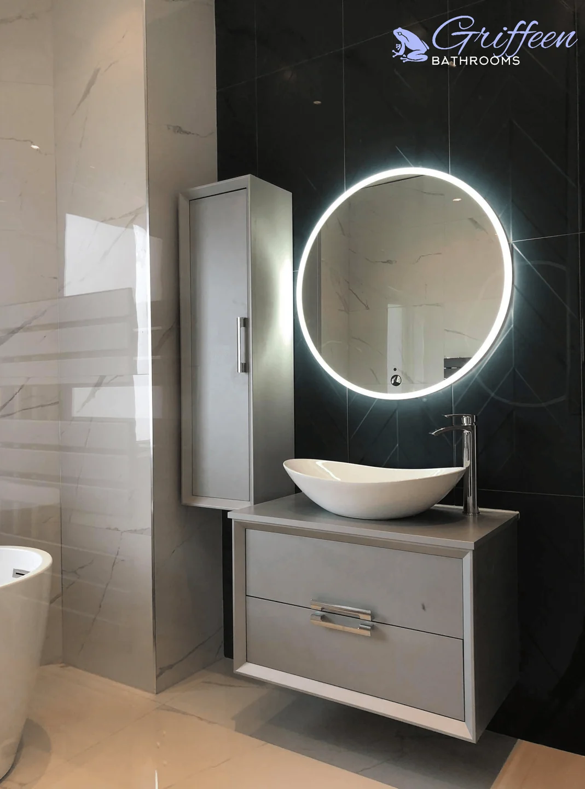
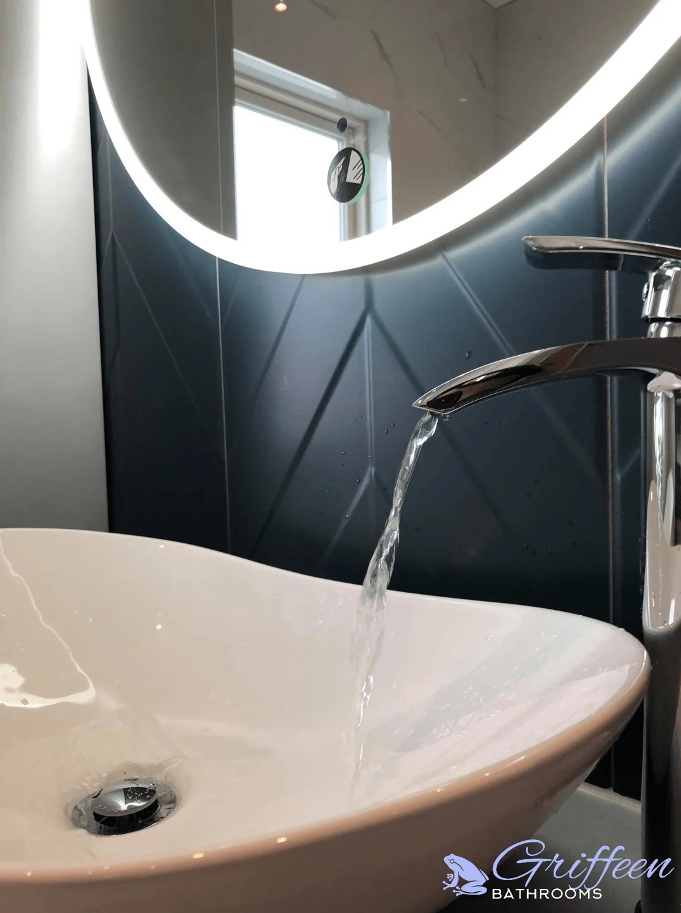
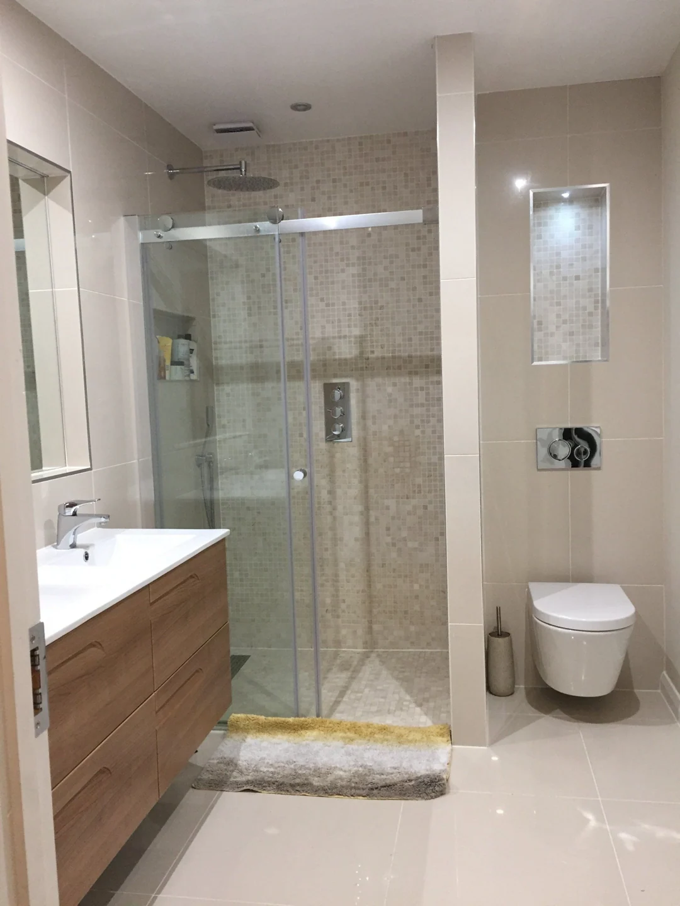
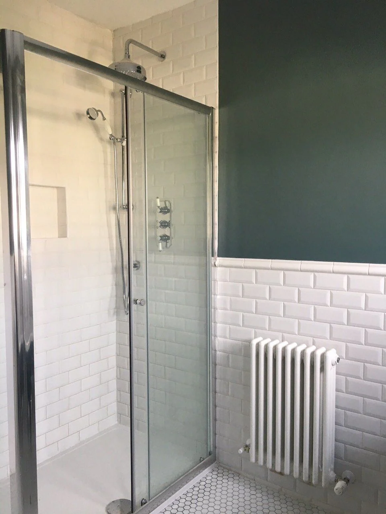
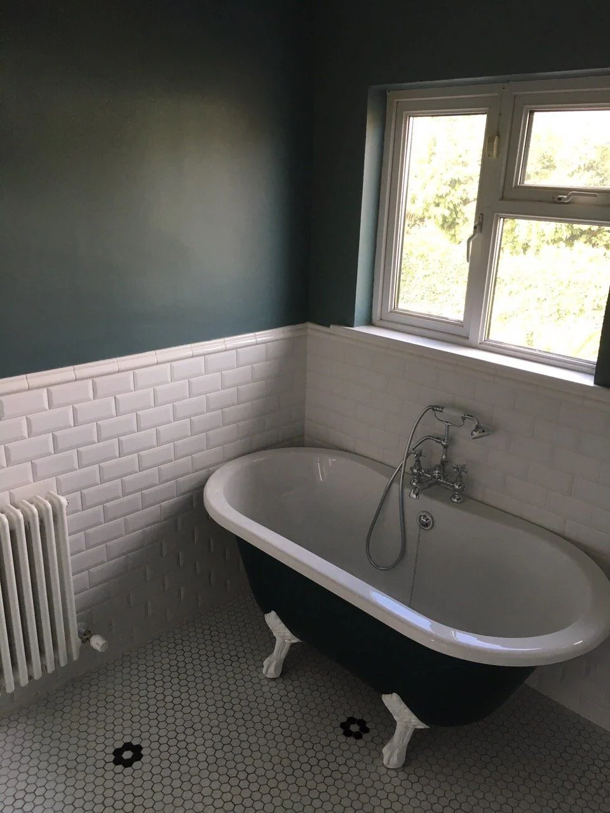
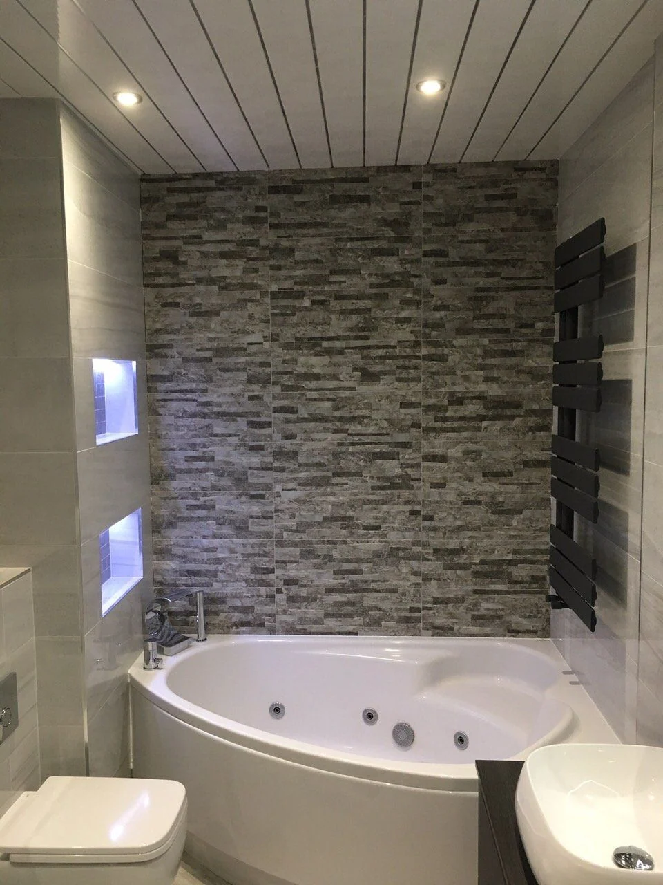
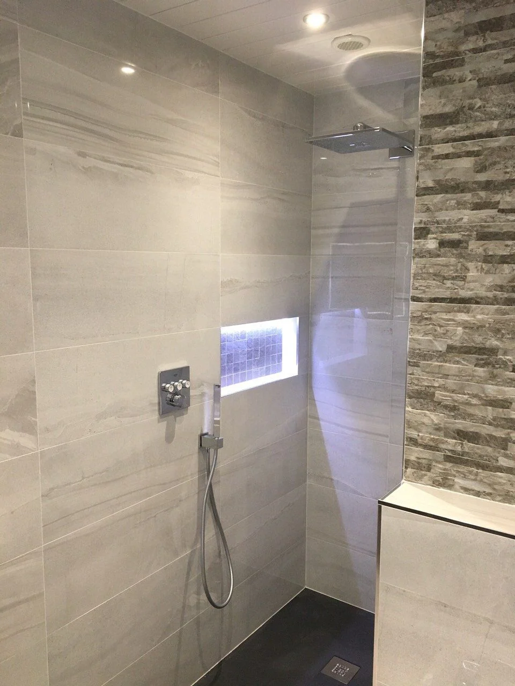

01 / A direction, not a package
Light & reflection
A round illuminated mirror, a countertop basin and a patterned feature wall in Victoria’s Churchtown bathroom.
Explore this project ↗

A place to start
A few ways to look at Griffeen’s completed rooms. These are details from real projects, rather than a catalogue of products or fixed packages.
01 / A direction, not a package
A round illuminated mirror, a countertop basin and a patterned feature wall in Victoria’s Churchtown bathroom.
Explore this project ↗

02 / A direction, not a package
Wood tones, cream surfaces and a walk-in shower in Victoria’s Lucan project.
Explore this project ↗

03 / A direction, not a package
White subway tiles, a dark wall and a freestanding bath in Aoife’s Dundrum room.
Explore this project ↗

04 / A direction, not a package
Stone-effect tiles, recessed details and a grey palette in Ingrida’s Lucan project.
Explore this project ↗

Your room, next
Tell us what you would like to change. The next step is to talk through your bathroom and arrange a property visit.
Get a free quoteGriffeen Bathrooms · Lucan